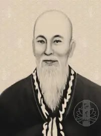
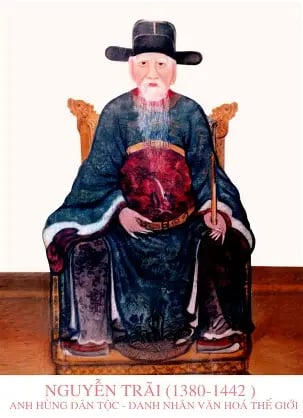

⭐ Các Danh Nhân Được Thờ Phụng

Chu Văn An
Người Thầy Của Muôn Đời (1292 - 1370)
Quê Quán: Xã Thanh Liệt, Hà Nội
Chức Vụ: Tư Nghiệp Quốc Tử Giám
Từ chối chốn quan trường, về núi Phượng Hoàng ở ẩn và dạy học. Người đặt nền móng cho tinh thần giáo dục thực học và liêm chính. Được thờ trang trọng tại vị trí cao nhất trong các Văn Miếu, là biểu tượng bất diệt của đạo đức nhà giáo.

Mạc Đĩnh Chi
Lưỡng Quốc Trạng Nguyên (1272 – 1346)
Quê Quán: Làng Lũng Động, Chí Linh
Chức Vụ: Tễ Tướng (Thủ Tướng)
Vị Lưỡng quốc Trạng nguyên duy nhất. Đỗ Trạng nguyên năm 1304 dưới vua Trần Anh Tông. Hai lần đi sứ nhà Nguyên, dùng tài đối đáp làm rạng danh quốc thể. Biểu tượng của tinh thần "vượt khó thành tài".

Nguyễn Bỉnh Khiêm
Bậc Tiên Tri Số Một (1491 – 1585)
Quê Quán: Làng Trung Am, Vĩnh Lại
Chức Vụ: Trạng Nguyên, Nhà Chiến Lược
Năm 44 tuổi mới đỗ Trạng nguyên (1535). Sau 8 năm làm quan, dâng sớ chém 18 nịnh thần không được, từ quan về quê mở trường dạy học. "Cố vấn tối cao" cho các tập đoàn phong kiến với những lời sấm truyền định hướng lịch sử.

Nguyễn Trãi
Bậc Quân Sư Kiệt Xuất (1380 – 1442)
Quê Quán: Làng Chi Ngại, Chí Linh
Tác Phẩm: Bình Ngô Đại Cáo
Danh nhân văn hóa thế giới. Tác giả bản tuyên ngôn độc lập thứ hai. Nhà chiến lược thiên tài với tư tưởng "mưu phạt tâm công" và nhà thơ lớn mở đầu cho dòng văn học chữ Nôm của dân tộc.

Nguyễn Thị Duệ
Nữ Tiến Sĩ Duy Nhất (1574 – 1662)
Quê Quán: Làng Kiệt Đặc, Chí Linh
Giả Danh: Nguyễn Duy Du
Nữ tiến sĩ duy nhất trong lịch sử khoa cử phong kiến Việt Nam. Giả trai để ứng thí, được vua Mạc Kính Cung phát hiện nhưng vẫn trọng dụng. Phong làm Quan giáo thụ - tấm gương về nghị lực và bình đẳng giới.